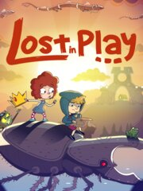

Lost in Play
Lost in Play
Details
|  | |
| Playtime | 1h 12m 38s |
| Last Activity | 8/28/2023 18:12:48 |
| Added | 8/19/2023 14:50:24 |
| Modified | 8/19/2023 18:49:59 |
| Completion Status | Played |
| Library | Steam |
| Source | Steam |
| Platform | PC (Windows) |
| Release Date | 8/10/2022 |
| Community Score | 72 |
| Critic Score | 90 |
| User Score | |
| Genre | Adventure Indie Point-and-click Puzzle |
| Developer | Happy Juice Games |
| Publisher | Joystick Ventures Snapbreak |
| Feature | Single Player |
| Links | Steam Official Discord GOG Twitch Android iPad iPhone |
| Tag | |
Description
Help a brother and sister on an uplifting epic adventure to find their way home. Solving puzzles, escaping a horned beast and meeting quirky goblins are just part of the journey!

Lost in Play is a journey through childhood imagination with thoughtfully crafted puzzles and colorful characters. Play as a brother and sister duo on an adventure to find their way back home. Between reality and fantasy, the siblings explore the enchanted forest of a horned beast, start a rebellion in a goblin village, and help a team of frogs free a sword from a stone.
PUZZLES & MYSTERY
The bizarre and dreamlike world of Lost in Play is filled with mystery, unique puzzles, and mini-games. Challenge a pirate seagull to a game of clicking crabs, serve magical tea to a royal toad, and collect pieces to build a flying machine. Be a part of this modern point & click game that will reward your curiosity and leave you excited for the next piece of story.
IMAGINATION COMES TO LIFE
From what seems like a normal morning at home to a typical afternoon at the park, you'll soon find yourself on a whirlwind quest as you sneak into a goblin castle, explore ancient ruins, and soar atop a giant stork. Lost in Play takes you on a nostalgic roller-coaster!
AN INTERACTIVE CARTOON
With a hand-crafted style similar to animated shows from childhood, Lost in Play is a story meant for all. Whether you’re seeking wholesome delight or just a good time, the family can enjoy this story together.
GAME FEATURES:
ACCESSIBILITY
For detailed accessibility report please visit the family gaming database
https://www.taminggaming.com/accessibility/Lost+In+Play
Happy Juice Games previously worked on "The Office Quest" and is a studio that focuses on pushing the boundaries of animated adventure games. We hope you love our game as much as we loved making it.
Lost in Play is a journey through childhood imagination with thoughtfully crafted puzzles and colorful characters. Play as a brother and sister duo on an adventure to find their way back home. Between reality and fantasy, the siblings explore the enchanted forest of a horned beast, start a rebellion in a goblin village, and help a team of frogs free a sword from a stone.
PUZZLES & MYSTERY
The bizarre and dreamlike world of Lost in Play is filled with mystery, unique puzzles, and mini-games. Challenge a pirate seagull to a game of clicking crabs, serve magical tea to a royal toad, and collect pieces to build a flying machine. Be a part of this modern point & click game that will reward your curiosity and leave you excited for the next piece of story.
IMAGINATION COMES TO LIFE
From what seems like a normal morning at home to a typical afternoon at the park, you'll soon find yourself on a whirlwind quest as you sneak into a goblin castle, explore ancient ruins, and soar atop a giant stork. Lost in Play takes you on a nostalgic roller-coaster!
AN INTERACTIVE CARTOON
With a hand-crafted style similar to animated shows from childhood, Lost in Play is a story meant for all. Whether you’re seeking wholesome delight or just a good time, the family can enjoy this story together.
GAME FEATURES:
- A mysterious animated puzzle adventure.
- Filled with magical and magnificent creatures.
- Created with families in mind. Have your children watch you play!
- No dialogue. Everything is communicated visually in a universal way.
- Inspired by nostalgic TV shows such as Gravity Falls, Hilda, and Over the Garden Wall.
- Play cards with goblins, build a dragon, and teach a sheep how to fly.
- Includes 30+ unique puzzles and mini-games.
- Catch a derpy chicken. Maybe.
ACCESSIBILITY
For detailed accessibility report please visit the family gaming database
https://www.taminggaming.com/accessibility/Lost+In+Play
Happy Juice Games previously worked on "The Office Quest" and is a studio that focuses on pushing the boundaries of animated adventure games. We hope you love our game as much as we loved making it.